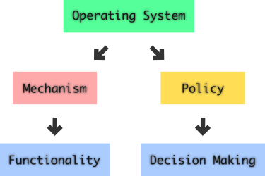
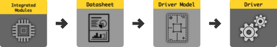

This is not a complete tutorial on how to setup a software stack to
serve communication. All i have listed here is my set of ideas, possibly
learning from my peers, myself while trying to achieve a self reliable
and self hostable communication infrastructure. The contents might change
based on my learning in future.
WHY ?
Logic requires abstraction and phenomenal functional simultaneously. With the required hardware i.e, devices
and instruments in place, respective system software stack and application software stack has to be deployed
that enables the devices to function for what they are integrated in the first place. Having a software that
just works is under specified for a system to function properly. How the logic is executed by it, how
it is written, who has created it, why it is created, what kind of peer review is done before building for
execution are required to be transparent for those who use and contribute back to the development. Thus only
a software stack that has both accountability & transparency in its construction can only be claimed as
correctly specified.
Process :
Every software will have a functional error or logic error or syntaxical error, etc... which might go unnoticed,
irrelevant to the type of software we use or how it is used. Thus worrying about errors in the logical
and functional implementation is not of primary importance, and is always solved effectively with transparency.
The stack which we require for communication here requires real-time performance, with negligible down-time,
simple user interaction, optimal supply of configuration that satisfies user demands, reduced lag, optimal
resource utilization, etc...
Communication once established through a connected channel, must not be severed because of any logical or
functional error. This is a vital & necessary requirement which is challenging to achieve. Continuity in
communication without interruption is equivalent to having a long road ride without having the tyres punctured
or engine repaired on a smooth road with an ideal driver. Achieving such a stringent cannot be compromised,
as the very idea of communication involves having a meaningful, and intelligent sharing of ideas and thoughts
through some means and medium.
The more we add to the infrastructure like, power supply, additional hardware devices, software services &
stacks, the more the infrastructure gets bulky and cries for more maintenance. Thus one of the prime goal is to
create stacks that construct the infrastructure to be minimal and simple. This developmental approach reduces
the stress on the underlying hardware platform. The mechanism and policy needs to be clearly defined
in terms of their boundaries, interactions, isolations, relations, etc. This would facilitate the developers
to come up with a pragmatic stack with clear layerings and interfaces so that modularity can be achieved
which further eases the maintenance of the stack.

Managing Mechanism & Policy
Most of the above required development principles have been pragmatized through management and regulation systems
like software development process, version management, documentation, etc.. which in turn are other software stacks
that are created to manage development process in a collaborative and cooperative way. With the availability of
such development management stack the contributors has to just worry about the logic required to achieve
the functionality and features of a system - which might in turn required highly interdisciplinary verticals.
For instance, in developing a software stack for enabling a communication infrastructure, some might be interested
in the physical aspect of devices such as - radio propagation, planning, coverage, bandwidth, beam steering,
modulation schemes, etc. While others might be interested in looking the system from a abstract networking point of
view caring about addressing, encapsulating, routing, etc. Some may even concentrate on security stuff. All these
can be compartmantalized and could be interfaced once a stable threshold is reached gauranteeing the required
functionality with the other layers. This in general, would be implemented along with an operating system like
GNU/Linux or above it. Most of the mechanism based on open standards could be integrated with the
operating system stack, devices could be handled in device drivers, and kernel modules that forms the hardware
abstraction, and remaining policies can be driven from user space where diverse service stacks can be deployed.
The kernel space deals mostly integrating the mechanisms that logically provide interfaces to derive the required
work from the hardware. It also abstracts the specificities and complexities involved in speaking with the hardware.
In the case of GNU/Linux the kernel space has device drivers, kernel modules, memory management, process
management, stack structure management, etc... that collectively provides essential interfaces to facilitate the
shell, libraries, and other services to talk to. When this kernel stack is compiled to a particular hardware
architecture and deployed firmly into the memory of the system on chip, the logics become embedded and would
suit the core functions of the hardware. Now much of the functions are specific to the features pertaining the
hardware used. No essential feauture out of that particular hardware could be expected from the kernel.
This is where we use the term Firmware to establish its functional duty.

Typical Driver creation workflow
Required Modules :
There is no single semiconductor chip that would solve all the problem pertaining in bringing up a communication
infrastructure. Atleast, for the sake of modularity and to prevent single point of failure, the duties are
distributed through interfaced network of chips, while balancing the floorspan space and electromagnetic
interference from the chips and traces itself. Thus the controller chip which embeds the firmware has able to
orchestrate with the attached peripheral system on chips, to coordinate the required functions and features.
This is where GNU/Linux - Hardware Abstraction Layer (HAL) plays a very flamboyant role, that provides
transparent and secured access of hardware to the above layers in the software stack. It basically constitutes of:
When it comes to user space, it further abstracts the underlying mechanism and focuses on providing
a easier interface for the user to access required functions from the system as a whole. This also involves
in transparently showing the logical behavior of the system, so that user shall be informed when a particular
error or bug is identified, so that it can be measured either manually or automatically, to report about the
event to the core contributors who built the system, which will provide the way for the developers to
inspect and solve the bug in the next release cycle.
Required Modules :
Majority of the user space services are operated above
the collection of development libraries, shell, which inturn communicates to the kernel space through
proper callable interfaces to execute the tasks queued by the service. Nowadays, user space drivers are
also emerging, which enables a developer to write a driver that can be operated in the userspace itself,
so that it primarily facilitates to see how the driver and repsective modules behave without ever going through
the pain of compiling and debugging.